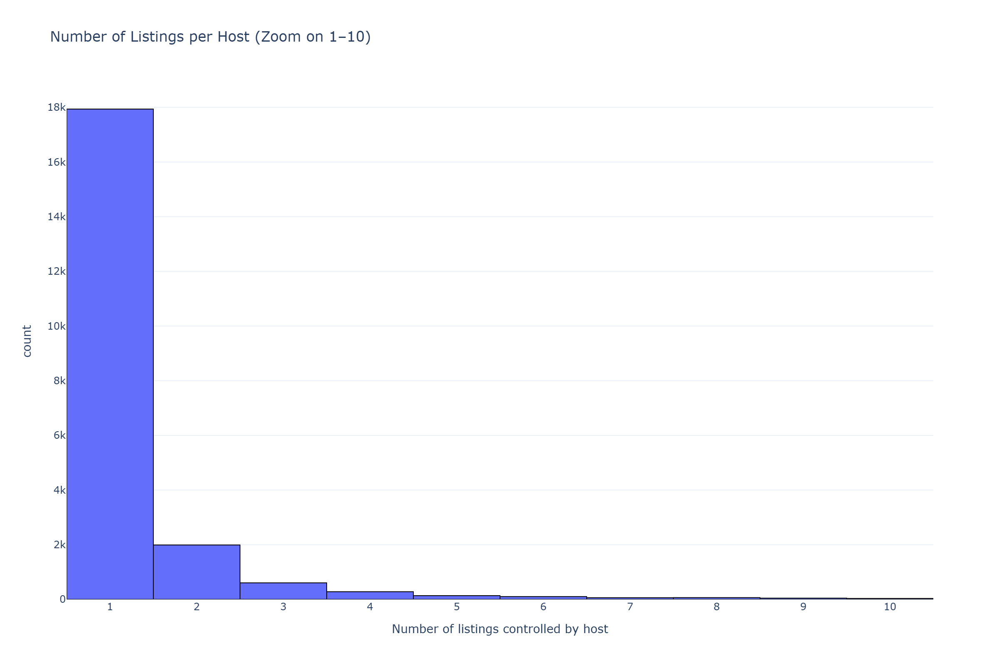
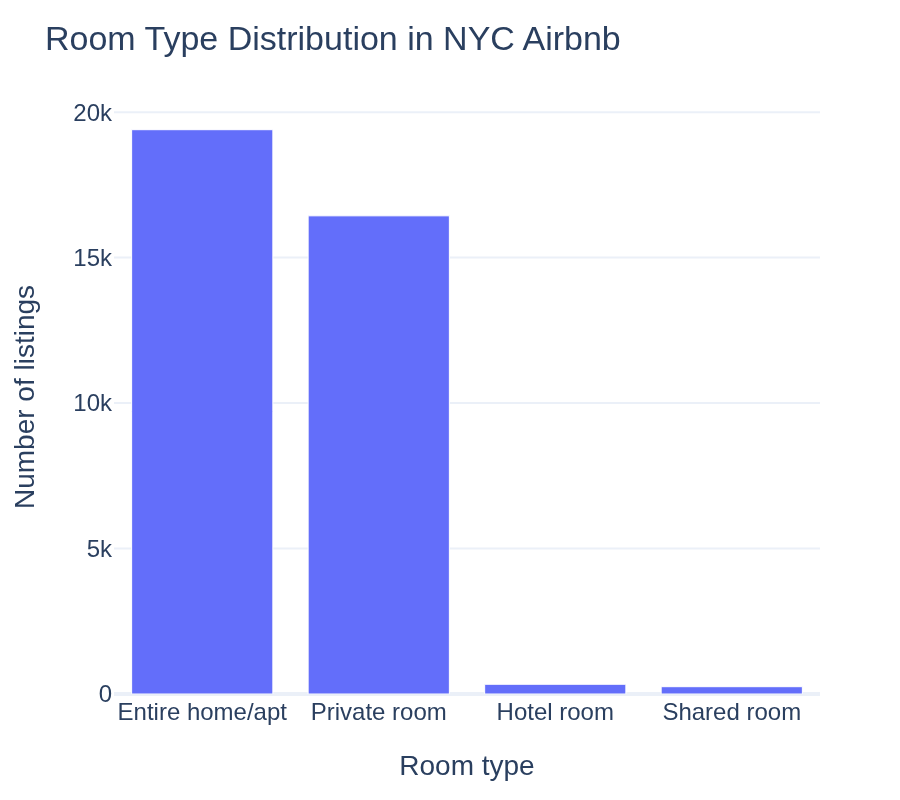
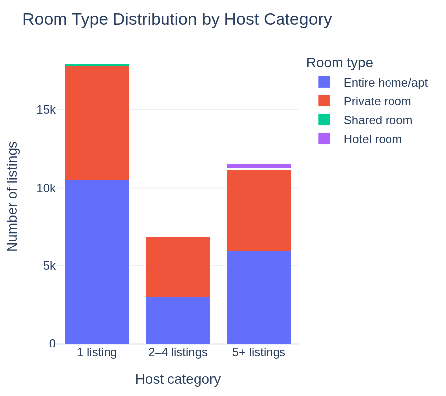
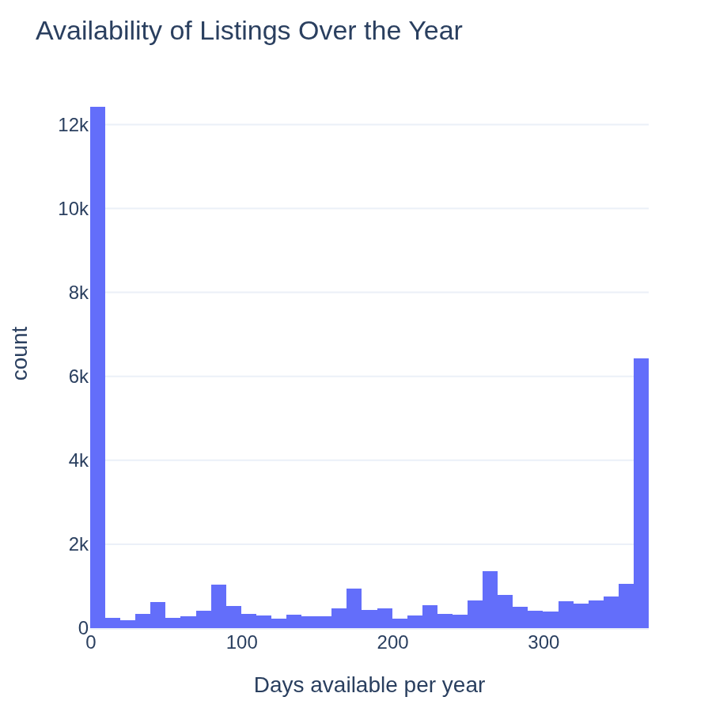
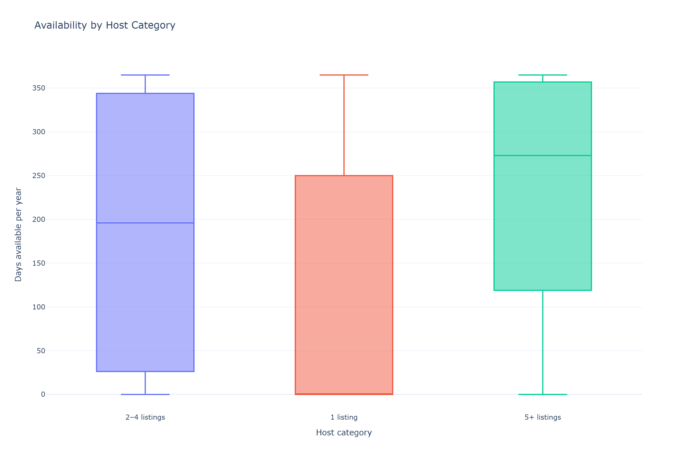
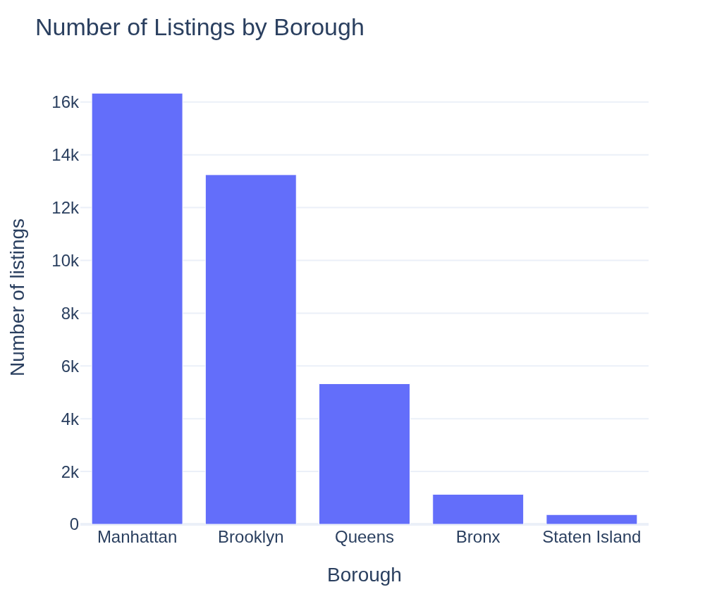
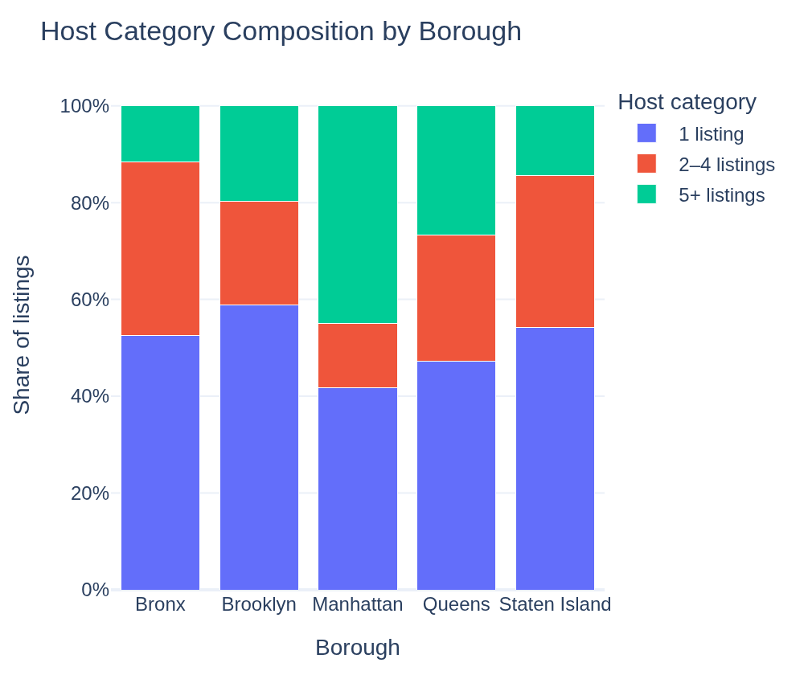

Why this matters
Airbnb was originally built around the idea of home-sharing. But in a city like New York, that idea may coexist with something very different: hosts managing multiple listings, entire apartments offered as full-time rentals, and spatial concentration in high-demand areas.
Who really owns Airbnb listings?
At first glance, the platform looks highly decentralized. In fact, about 84% of hosts manage only one listing. But the long tail matters: a smaller group controls many listings, and some hosts operate on a much larger scale.
This means Airbnb in NYC is not purely a platform of casual hosts. It also includes actors whose behavior looks much more structured and business-like.

What are people actually renting?
Room type adds an important twist. Private rooms are common, which means the original idea of “sharing a spare room” has not disappeared. At the same time, entire homes and apartments also make up a very large share of listings.
So the platform still contains home-sharing, but it also supports full-unit rentals that look much closer to a hotel or investment property model.


Used casually or run like a business?
Availability provides one of the clearest behavioral signals. Some listings are available very little during the year, which is consistent with occasional hosting. Others are available almost all year, which looks much more like a standing rental operation.
This difference becomes stronger when comparing host categories: the more listings a host controls, the more continuously available those listings tend to be.


Where is Airbnb concentrated?
Geography matters. Airbnb is not spread evenly across New York City: Manhattan and Brooklyn dominate in sheer volume. But the geography of professionalization is even more telling.
Manhattan stands out not only because it has many listings, but because it also has a much larger share of hosts with five or more properties. That suggests the most central and valuable parts of the city are also the most professionalized.


Explore the spatial patterns
The interactive figures below allow a more reader-driven view of the data. They follow the course idea of overview first, zoom and filter, details on demand.
Final takeaway
Airbnb in New York City is best understood as a hybrid system.
Most hosts are still small, and private rooms remain common, so the sharing economy has not disappeared. But a smaller group of multi-listing hosts plays a disproportionately important role: they are more likely to operate entire homes, keep listings available year-round, and concentrate in central parts of the city.
In short: Airbnb in NYC is no longer just sharing. It is sharing and business at the same time.
Behind the scenes
The full explainer notebook contains the data cleaning, exploratory analysis, methodological choices, and additional interpretation behind this project.